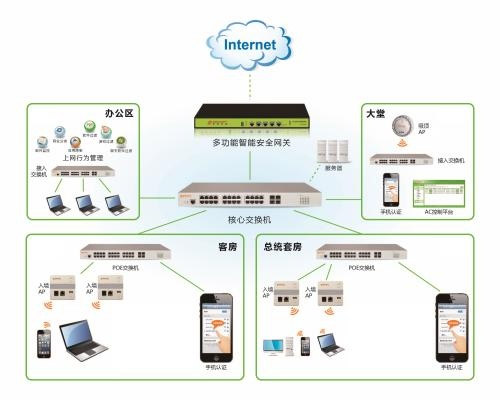

WLAN是计算机网络与无线通信技术相结合的产物，它以无线信 道作为传输媒介，提供了传统有线局域网的功能，并具备有线网络无法相比的可移动、漫游等特性，能够使用户真正实现随时、随地、随意的访问宽带网络。在政府和企业网领域，WLAN技术作为新的宽带数据网接入技术得到了越来越多的青睐，许多城市和地区都已经开展“无线城市”建设。而且在数字化办公、商业、医疗、教育、酒店、餐饮服务等众多领域，随着WLAN需求、技术、产品和应用的不断成熟，无线网络已经进入全面普及时代。

（一）网络连通性
随着政府公共事业的发展和网络技术的革新，公共场所的移动终端数目也越来越多，人们需要在任何地方、任何时候都能够轻松的接入到互联网络中访问相关服务器 或设备来完成他们的活动。网络环境就是提供通信设备之间需要互通的环境，以进一步实现丰富多彩的网络应用。为保证这些用户的网络业务需求，无线局域网服务成了必要手段。
（二）网络安全性
在商品竞争日益激烈的今天，政府及企业对网络的安全性有非常高的要求。在局域网和广域网中传送的数据都是相当重要的信息，因此一定要保证数据安全保密，防止被非法窃听或恶意破坏，所以在网络建设的初始就应考虑采用严密的网络安全措施。随着上网用户数量的大幅增长以及电子化办公的普及，政府和公共机构需要具 备一种“智能化”的开放式网络；需要它在允许大量用户接入的同时，能够防范对网络可能的攻击。
WLAN网络所提供的安全特性包括VLAN技术、用户认证技术、访问控制、负载均衡技术以及安全分级管理等，可充分满足网络安全性需求。府和公共机构需要具 备一种“智能化”的开放式网络；需要它在允许大量用户接入的同时，能够防范对网络可能的攻击
（三）网络可靠性
随着互联网的发展，上网用户不断增多，访问和数据传输量剧增，网络负荷也相应加重；同时随着企业对多媒体技术的广泛应用，视频数据、音频数据也越来越耗费 网络带宽。如果网络没有高性能，会导致系统反应缓慢，甚至在业务量突增时，发生系统崩溃、中止和异常等现象。
因此，网络在初始建设时不仅要考虑如何实现数据传输，还要充分考虑网络的冗与可靠；否则网络在运行过程中一旦发生故障，系统又不能很快恢复工作，所带来 的后果将使政府及企业蒙受巨大损失，并影响声誉和形象；并且高性能的网络也是实现一些关键业务或特殊应用的必备条件。
（四）网络可管理性
随着网络规模的日益扩大，设备和数据的种类日益增加，网络应用的日益多样化，网络管理也更加重要。良好的网络管理要重视网络管理人力和财力的事先投入，主 动控制网络，从而不仅能够进行定性管理，而且还能够定量分析网络流量，了解网络健康状况等。有预见性地发现网络存在的问题，并将其消灭于萌芽状态，可以降 低网络故障所带来的损失，使网络管理的投入达到事半功倍的效果.
（五）网络可扩展性
网络建设为未来发展提供良好的扩展接口是非常理智的选择。随着企业规模的扩大、业务的增长，网络的扩展和升级是不可避免的问题。同时，由于视频会议、视频 点播、视频监控、VOIP通信等多媒体技术的日趋成熟，网络传输的数据已不再是单一数据了，多媒体网络传输成为世界网络技术的趋势。政府和企业管理着眼于 未来，对网络的多媒体支持是有很多需求的。
通过模块化的网络结构设计和WLAN网络产品，能为客户的网络提供很强的扩展和升级能力。而且在网络带宽非常宝贵的情况下，丰富的QoS机制，如IP优先、排队、组内广播和链路压缩等优化技术，能进一步使实时多媒体和关键业务得到有效的保障。